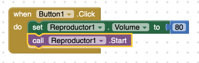
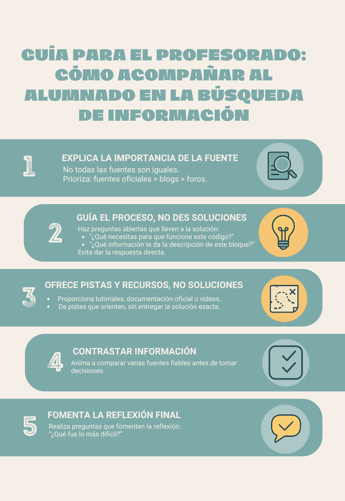

Guiar al alumnado en la búsqueda de información
En las primeras prácticas con nuevas herramientas digitales resulta clave enseñar al alumnado a buscar y seleccionar información fiable. Este acompañamiento inicial les permitirá mejorar sus proyectos y desarrollar autonomía. A continuación se muestra un ejemplo aplicado a la primera práctica de APP Inventor: Crear una app de chistes.
Por ejemplo, en la primera práctica proponemos que investiguen, cómo insertar un audio grabado por ellos mismos con su móvil, como chiste hablado en su APP. Lo primero que deberían hacer, es revisar la documentación oficial de la WEB de APP Inventor, ya que es la mejor manera de asegurarse de que buscan información actualizada. En vez de darles una respuesta directa podrías guiarlos en el proceso. Por ejemplo en la Web: https://appinventor.mit.edu/ --> Resources -->Documentation --> Component Documentation --> Media Component --> Player
Si traducimos lo que nos dice la WEB: "Componente multimedia que reproduce audio y controla la vibración del teléfono. El nombre de un archivo multimedia se especifica en la propiedad Source, que se puede configurar en el Diseñador o en el Editor de bloques. ¡Ojo! recuerda que de igual manera que hemos arrastrado un botón del menú interfaces a nuestro móvil cuando queríamos incluir un botón en el interfaz del móvil, si queremos utilizar el algoritmo que permite usar el reproductor "player" también debemos arrastrarlo hacia el móvil y tal y como nos indica en lo que acabamos de traducir, poner su propiedad "source" con el archivo correspondiente de audio que queremos reproducir. Si no aparece ninguno es porque no lo hemos subido previamente en Medios. Es decir resumiendo, si quieres utilizar el player, arrastro este componente hacia móvil, ( aparecerá debajo del móvil), posteriormente subes a Medios el archivo multimedia de audio y al seleccionar "Player1"/Reproductor 1 en todos los componentes, en el menú de propiedades/ Properties, en "Source" selecciono el audio que he subido en medios.
Bien, siguiendo con la información oficial vas a encontrar tres elementos: Propiedades, Métodos y Eventos. Antes de nada revisemos que es cada cosa:
- 1. Propiedades – ¿Cómo es algo?
¿Qué son? Las propiedades describen las características de un componente. Por ejemplo: el color de fondo de un botón, el texto que muestra una etiqueta, el volumen de un sonido, etc.- Por ejemplo nos aparece: "VolumeSets the volume property to a number between 0 and 100" nos está diciendo que podemos programar el volumen del reproductor entre una escala de 0 a 100 y tenemos que escribirla como número, fíjate que incluso nos da una pista que debemos utilizar el bloque azul que se corresponde con matemáticas. Si vamos a la parte de programación de APP Inventor esta propiedad la podríamos configuraríamos así: Cuando haga clic en el botón1, pon el volumen del reproductor a 80

- 2. Eventos – ¿Qué ocurre?
¿Qué son?: Un evento se dispara cuando el usuario hace algo o cuando pasa algo en la app (en nuestro ejemplo anterior sería el bloque marrón, cuando pulsamos el botón1 el programa hará lo que tengamos encerrado dentro de este bloque, en nuestro caso fijar el volumen a 80). - 3. Métodos – ¿Qué puede hacer ese componente?
¿Qué son? Los métodos son acciones que un componente puede ejecutar. Tú puedes llamar a un método para que algo ocurra (por ejemplo reproducir un chiste).

Entonces y esto es importante en la documentación te explican que cosas puedes hacer con los diferentes elementos. Por ejemplo, ¿sería posible poner un chiste en bucle o que un chiste se pare de contar si pulsamos otro botón para que se reproduzca otro chiste?
Pues consultando la documentación se podrían hacer las dos cosas, claro que sí y esto es importante porque ayuda a que el alumno por su cuenta revise y vea las diferentes opciones que puede configurar.
Por ejemplo si tenemos 3 chistes y queremos parar otro reproductor para que no suenen a la vez:
Cuando BotonChiste2.Click
llamar Player1.Stop
llamar Player3.Stop
llamar Player2.Start
Por ejemplo como me ha pasado a mi, una alumna me comenta: Profe! no me funciona el sonido. Ante este reclamo tenemos dos opciones le soluciono yo la incidencia o la invito a buscar sus propias soluciones. Si es la primera vez, le puedo preguntar. ¿Qué crees que puede estar fallando? y esperas que responda, si no responde puedes darle algunas pistas: ¿será el formato del audio que no lo reconoce app inventor?, ¿será que no has subido correctamente el archivo a Medios? o será que no lo has marcado en "Source", por ejemplo y revisar con ella la documentación y guiarle mientras ella va leyendo, por ejemplo, ante la primera pregunta, revisando la documentación dentro del componente "Player" aparece cuales son los formatos de audio que permite usar APP Inventor.
Por otra banda en internet hay muchísimos videotutoriales que les pueden ayudar e incluso creo que es muy oportuno que les enseñes el forum de app inventor donde la comunidad da respuesta rápidamente a cualquier consulta y lo que es mejor, es probable que su duda ya esté comentada en el foro, solo hay que buscarla : )
Reflexión final: ¿le damos los peces o les enseñamos a pescar?.
Más que ofrecer directamente la respuesta al alumnado, resulta mucho más valioso acompañarle en el proceso de descubrirla. Guiar a través de preguntas, pistas y orientaciones no solo resuelve la duda puntual, sino que les enseña a buscar, analizar y aplicar la información por sí mismos. En definitiva, no se trata de “darles el pez”, sino de “enseñarles a pescar".
Guía orientativa: Cómo acompañar al alumnado en la búsqueda. de información
